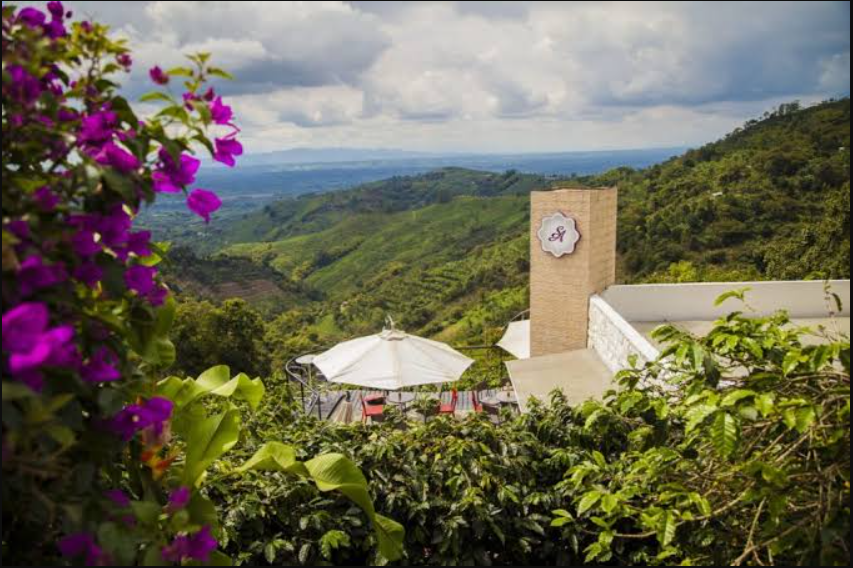

Buenavista, Quindío
Coffee, Nature, and a Real Break from Technology Tech & Learning
If you are looking for a calm place in Colombia, Buenavista, Quindío is a great option. It is a small town in the Coffee Region, surrounded by green mountains and beautiful views. The atmosphere is slow and peaceful, so it feels easy to breathe, rest, and enjoy the moment.
A special stop: San Alberto Coffee Shop
One of the most famous places to visit is San Alberto Coffee Shop. It is well known for high-quality coffee and a very nice experience. You can try different types of coffee, learn about the flavors, and enjoy a warm drink while you look at the landscape. The place is quiet, clean, and perfect if you want a relaxed plan.
Tourist activities in Buenavista
Even though Buenavista is small, there are many simple and enjoyable things to do: Viewpoints (miradores): You can visit viewpoints and take amazing photos of the mountains and coffee farms. Walking and short hikes: Many routes are not difficult, so you can walk and enjoy nature without stress. Coffee experiences: Some places offer tours where you learn how coffee is grown and prepared. Local food: You can try typical dishes from the region and enjoy a calm meal with a great view. These activities are not about rushing. They are about enjoying the day at your own pace.
A good place to disconnect from technology
Buenavista is also a very good place to disconnect from technology. Here, you do not feel the need to check your phone all the time. You can take a walk, drink coffee slowly, and talk with the people you travel with. Instead of screens, you have mountains, fresh air, and quiet moments. If you feel tired of notifications, social media, or a busy routine, a short trip to Buenavista can help you reset. Sometimes, the best connection is not Wi-F it is nature.
Have you visited Buenavista, Quindío? What was your favorite part of the trip?
mira el video